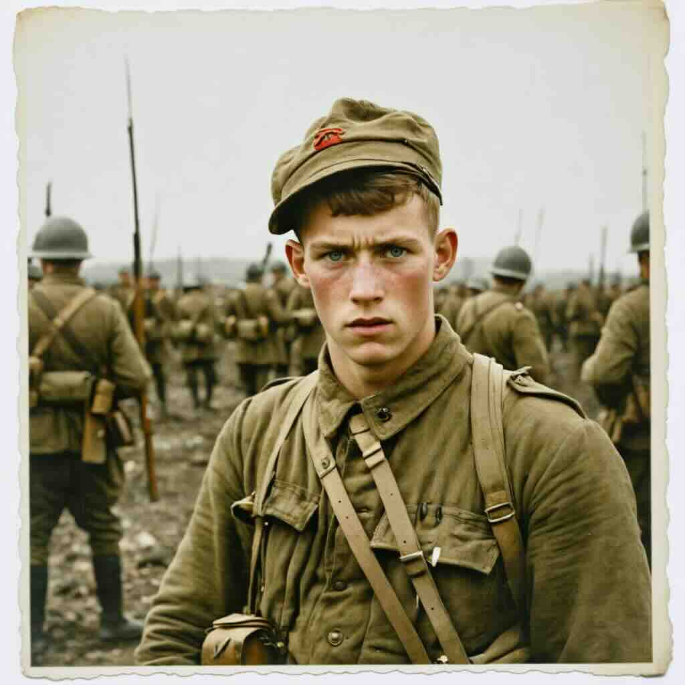
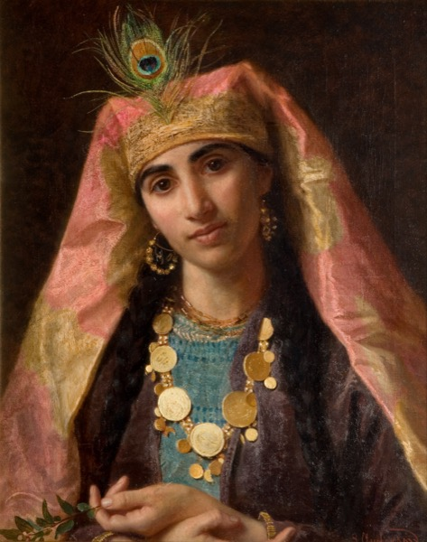
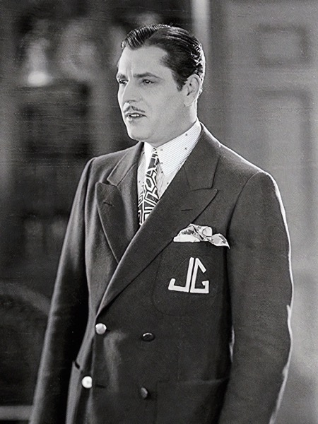
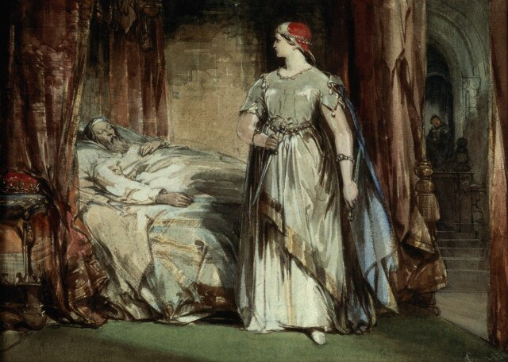

Target
Opposition
Complication
Parameters

Five folding chairs in the basement of the Metro Library. A coffee urn that hasn’t been cleaned since the Clinton administration. A hand-lettered sign taped to the door: Wednesday Support Group — All Welcome.

You are about to play a session of the Guttenberg Engine — a game set inside the literary web, the vast interconnected network of every text ever written. Somewhere in that web, a young soldier named Andrei has realized he is fictional. He is trapped in a war epic that will kill him in Chapter 41, and he is trying to escape into a pastoral romance two shelves over. He believes the love story will save him. He is wrong.Tonight, an operator named Dr. Donald Ginsfeld will audition four literary characters for a three-person extraction team. One will be cut. The audition is disguised as group therapy. The coffee is terrible. The stakes are structural — if Andrei crosses without intervention, both texts collapse.
There is also Lisle Kade. Another operator, faster and better funded, who wants the breach point to stay open. She has a team already in position. Ginsfeld doesn’t know her timeline.
What follows is twenty beats of conversation, deception, dice rolls, and difficult choices — played out in real time between characters who remember everything they’ve ever been through and an operator who is lying to all of them about why they’re really here.

Ginsfeld arrives early. He sets out five folding chairs in the basement beneath the Metro Library, tests the coffee urn, adjusts the hand-lettered sign that reads Wednesday Support Group — All Welcome. The fluorescent light buzzes its familiar rhythm. He sits in his chair and opens his notebook.
He reviews what he knows. Andrei — young soldier, war epic, minor figure, Chapter 41 death sentence. The boy has realized he is fictional. He is trying to cross into a pastoral romance two shelves over. He believes the love story will save him. He is wrong. The pastoral romance is a closed text. Forcing entry will collapse both narratives.
Then there is Kade. Lisle Kade. He knows the name. He knows she's faster, better funded, and that she operates without ethical constraints. He knows she has a three-person team already in position. He does not know her timeline, her method, or her team composition. He knows she wants to weaponize the breach point — the moment Andrei crosses, both texts become structurally vulnerable, and Kade can extract rare material from both simultaneously.
He needs speed, persuasion, and someone who can handle a hostile operator. He needs three people out of the four who are coming tonight. He needs to figure out which three before the coffee gets cold.

The door opens and a large man descends the stairs. Not merely tall — dense. Broad shoulders, hands like shovels, the kind of physical presence that rearranges the geometry of a room simply by entering it. He wears a heavy coat despite the warmth of the basement, buttoned to the collar. His face is weathered, patient, watchful.
"Dr. Ginsfeld?" The voice is quiet. Careful. A voice trained to take up less space than the body it belongs to.
"Welcome," Ginsfeld says. "Coffee?"
"Thank you." Valjean takes a cup, sits in the chair nearest the wall. As he settles, something metallic shifts inside his coat — a faint clink, quickly stilled by a hand pressed to his chest.

She enters and the room feels like it has an audience. Not because she's loud — she isn't. She moves quietly, almost deferentially, a woman of medium height in layered silks that whisper when she walks. But something about her presence suggests that a story has begun, and everyone else is now a character in it.
She takes the chair opposite Ginsfeld, arranging her silks with practiced ease. Her eyes move across the room — the hand-lettered sign, the coffee urn, the large man in the wall chair, the clipboard. She smiles. It is the smile of someone who has recognized the shape of a story and decided to see how it ends.

The door opens and a man enters who looks like he was assembled from the idea of what a man should be. Impeccable suit, immaculate hair, a smile that arrives before his words do. He radiates polish — the specific, slightly excessive polish of someone who built himself from scratch and overcompensated at every stage.
"Good evening, old sport," he says to Ginsfeld, extending a hand. The handshake is firm, warm, calibrated.
Gatsby surveys the room, takes the remaining chair between Scheherazade and the empty fifth seat, and begins unconsciously straightening the sugar packets on the card table, aligning them in neat rows.

The last to arrive. She descends the stairs with the carriage of someone who expects the room to reorganize itself around her — and it does. Straight spine, level gaze, the precise economy of movement that comes from years of being watched by an entire court.
She takes the remaining chair without asking which is hers. Her hands settle in her lap, and then — barely perceptible — her thumb begins moving against her palm. A small, circular motion, practiced to near-invisibility.
Ginsfeld sets down his clipboard. "Thank you all for coming. This group exists for people who find themselves... between stories. Displaced. Unmoored." He pauses. "I'd like to start with a question. Have you ever been in a story that wasn't yours?"
Scheherazade speaks first. "Every story I ever told was someone else's. I lived inside a thousand other lives to survive my own. The question isn't whether I've been in a story that wasn't mine. The question is whether I've ever been in one that was."
Valjean speaks next. Quietly. "I was given another man's name. Another man's life. I was a mayor. I ran a factory. I raised a daughter. None of it was mine. It was a good life, but the number never left." His hand presses his chest — the brand beneath the shirt.
Gatsby adjusts a sugar packet. "I'm still looking," he says. "For the right story. The one where things work out." He smiles, and the smile is the most practiced thing in the room.
Lady Macbeth is last. "I was the wrong narrative," she says. "I was written as a cautionary tale. I was something else." Her hands still for a moment. "I was the wrong narrative, and I stayed in it until it killed me."
"Second question," Ginsfeld says, leaning back in his chair. "Has anyone here stayed in a bad situation because leaving felt like a betrayal?"
Valjean answers immediately. "Yes. For nineteen years." Then: "But I did leave. I broke the law to leave. And a bishop gave me silver and told me to become a new man. Staying was not loyalty. It was despair wearing loyalty's clothes."
Lady Macbeth's answer is clinical. "I stayed because the investment was too great to abandon. The cost of the crown was everything. You do not walk away from everything." Her hands wash themselves. "But there is a difference between loyalty and sunk cost. I learned it too late."
Scheherazade: "I stayed for one thousand and one nights. Every night I could have stopped. Every night I chose to continue. Was that loyalty? Was it survival? I have never been able to separate the two."
Gatsby: "I've never left. I've never left anything. You can't betray something you haven't finished building."
It happens organically. Between Ginsfeld's questions, the two sharpest minds in the room find each other. Lady Macbeth turns to Scheherazade. "We are the same species," she says. "Women who acted while the world expected us to wait."
Scheherazade tilts her head. "You acted. I told stories. Are those the same?"
"Mine was a single act, done once, irrevocable. Yours was a thousand acts, done nightly, each one buying another morning. I admire the endurance. I could not have sustained it."
"You could have," Scheherazade says. "You chose a different strategy. Speed over duration."
A pause. Scheherazade asks: "Do you regret the act itself?"
"No." Lady Macbeth's voice is flat, certain. "I regret that it wasn't enough."
It starts with a name. Gatsby looks at Valjean and says, almost casually, "You changed your name."
Valjean goes very still. "Yes."
"So did I." Gatsby's smile flickers — the performance dropping for a fraction of a second. "Did it work?"
Valjean considers this with the gravity of a man who has spent decades considering it. "The name worked. The man behind the name... took longer."
"How long?"
"I am still becoming him."
Gatsby's composure fractures. Not dramatically — a hairline crack. His hand stops arranging the sugar packets. His eyes lose the practiced warmth and become, for a moment, simply young and afraid.
Cost of Mercy's Shield: the intervention reveals the convict past. Valjean's body language shifts — the chain gang posture surfaces, the way he holds his hands, the density of a man who moved stones for nineteen years. Observers with INT 12+ recognize it.
Scheherazade turns to Gatsby. "You built yourself," she says. "So did I. The difference is that I know my construction is made of stories."
Gatsby straightens. "And mine?"
"Yours is made of one story. The same story, told over and over, each time with more gilt and less truth."
The room tenses. Gatsby's jaw tightens. But Scheherazade isn't attacking — she's diagnosing. Her voice carries the texture of someone who has been inside a thousand diagnoses and survived them all.
Cost of The Cliffhanger: One Thousand and One condition intensifies. For a moment, Scheherazade isn't certain whether the fisherman is a story or a memory. The boundary between her tales and her life thins further.
Gatsby is quiet for a long time. Then: "I don't know."
It is the most honest thing he has said all evening.
The system is under tension. Four characters, each now partially known to the others, each carrying filters that press against one another. The Sharpening clarifies. The Lost Thing aches. The Compulsion to Listen holds. The Test of Goodness probes.
Gatsby is the one who notices. "The sixth chair," he says, looking at the empty seat beside him. "What's the sixth chair for?"
Ginsfeld looks at the empty chair. "Optimism," he says. "Or caution."
Gatsby's eyes narrow. For a man with WIS 8, he is surprisingly attuned to evasion. Perhaps because he is an expert in it.
"One more question," Ginsfeld says. "Then I'll stop pretending this is therapy."
The room stills. Lady Macbeth's eyebrow rises. Scheherazade smiles — she's known since Beat 3.
"Imagine a soldier. Young. Minor character in a war story. He discovers he's going to die in Chapter 41. He finds a door — a door to another story, a love story, where no one dies. What do you tell him?"
Lady Macbeth answers first. "That he escapes his meaning. A soldier who flees his death ceases to be a soldier. He becomes nothing — a ghost in a story that doesn't know him." Four words that contain an entire philosophy: he escapes his meaning.
Scheherazade's answer is a question. "Is it the dying or the being forgotten?" She would tell him a story — not to convince him to stay, but to understand what he's actually running from. The death, or the insignificance?
Valjean: "I would stand in front of the door." Not to block it. Not to argue. To be the thing between the soldier and the wrong choice — a body, a presence, a man who knows what it means to run and what it costs.
Gatsby: "I'd tell him to go."
The room turns.
"I'd tell him to go," Gatsby repeats. "Because maybe it works. Maybe the love story takes him in. Maybe you can reach for something better and it reaches back."
"This isn't a support group," Ginsfeld says. He puts down the clipboard. "It's a recruitment session."
Four different flavors of silence. Lady Macbeth's is the silence of confirmation — she suspected. Scheherazade's is the silence of a story reaching its turning point — she knew. Valjean's is the silence of betrayal, heavy and still. Gatsby's is the silence of a man processing information while maintaining his composure.
"You lied to us," Valjean says. His voice is quiet, but the room feels the weight of it.
"I did," Ginsfeld says. "I am the same man in every room. The coffee was real. The questions were real. The purpose was always this."
Ginsfeld describes the mission. Andrei. The war epic. The pastoral romance. The breach point. Kade. The timeline. He holds nothing back except the complication — the war epic's hunger for a replacement character. He'll reveal that when the team is assembled.
Lady Macbeth speaks first. "What role do you need filled?" She doesn't ask if she's being considered. She asks for the job description. Pure Operator.
Ginsfeld outlines: Persuader, Shield, Operator. Three roles. Four candidates.
Lady Macbeth nods. "I'm the Operator. You know it and I know it. What do you need from me that you don't already have?"
Scheherazade: "I changed my relationship to death every night for three years. If you need someone who can reach a boy who is afraid of dying, I am the one who speaks that language."
Then Gatsby asks about the war epic. His eyes change. The green light — the permanent condition that only he can see — flares. "A war epic," he says. "A soldier trying to escape. A love story on the other side."
"I want to go in," Gatsby says.
"The team is three," Ginsfeld says. "Not four."
He looks at Gatsby. Gatsby knows. The green light dims — not gone, but retreating, pulling back to whatever distance it maintains when hope is being withdrawn.
"You understand that story better than anyone in this room," Ginsfeld says. "The soldier reaching for a better narrative. The door to the love story. The belief that wanting something badly enough makes it real." He pauses. "That's exactly why you can't go into it."
"Because I wouldn't come back," Gatsby says. Not a question.
"Because you wouldn't come back."
Lady Macbeth speaks. Two words. "Have you?"
Gatsby looks at Valjean. Not at Ginsfeld, not at the women. At the one person in the room who defended him without being asked. "Tell them I can change."
Gatsby stands. The chair scrapes against the concrete. For a moment, his composure is gone entirely — the self-made man unmade by rejection. Then, with the practiced grace of someone who has been turned away from better rooms than this, he reassembles himself. The suit straightens. The smile returns. The shoulders square.
"I've been turned away from better parties, old sport."
Then he stops. The smile drops. Not into grief, but into something rarer: genuine conviction.
"The soldier," Gatsby says. "Andrei. You're going to tell him to stay in his story. You're going to tell him the door is wrong, the love story won't take him, and his death in Chapter 41 is the price of narrative integrity." He looks around the room. "You're right. I know you're right. But when you find him, tell him this:"
"Tell him that the reaching matters. That every hand that stretches toward a green light in the dark is doing something sacred, even if the light moves. Tell him that the act of hope is not a failure just because hope fails. Tell him that the door was real, even if walking through it would have destroyed everything."
"Tell him that. Not your version. Mine."
Cost: Gatsby's WIS drops to effectively 7. The boundary between his performance and his reality thins to nothing. He can no longer tell whether what he just said was a speech or a prayer.
Gatsby pauses at the foot of the stairs. He doesn't turn around — he speaks to the wall, to the stairway, to the door above.
To Valjean: "The bishop knew what he was doing when he gave you the silver. You were already the man he saw. You just needed someone to say it."
To Lady Macbeth: "The crown was worth it. Not the cost — the reaching."
To Scheherazade: "Finish the story."
To Ginsfeld, last, without turning: "You'll lose someone in there."
Then he climbs the stairs and the door closes behind him.
Three chairs. The empty fourth sits like a wound in the circle. Ginsfeld stands and moves to the card table, unrolling a map that wasn't there before — annotated, marked, covered in his tight handwriting.
"Scheherazade. Persuader. You reach Andrei. You enter his narrative through story — the fisherman and the jinni, the question of whether it's the dying or the being forgotten. And you carry Gatsby's gift: the language of belief. Tell the soldier that the reaching matters. Not your version. His."
"Lady Macbeth. Operator. Kade's team is already in position. Three operators, unknown capabilities, unknown timeline. You manage the tactical situation. You neutralize the opposition. You keep the breach point stable until Scheherazade can bring Andrei out."
"Valjean. Shield. The war epic will try to absorb one of you. It will offer a role — a place that feels like belonging. You resist. You stand between the text and the team. You stand in front of the door."
Valjean looks at Ginsfeld. "I have my purpose. It's in my pocket." His hand presses the candlesticks through his coat. "A bishop gave it to me."
Practical beat. Ginsfeld distributes maps — annotated cross-sections of the war epic's narrative architecture, the breach point locations, the estimated position of Andrei within the text. Scheherazade studies the narrative structure, her fingers tracing the story's spine, identifying the seams where Andrei might be reached. Lady Macbeth studies the entry points and sight lines, already running tactical scenarios for Kade's team.
Valjean looks at the empty chair.
"The young man," he says. "Gatsby. He'll be alone tonight."
"When this is done," Ginsfeld says. "Find him another room."
It is a promise. In this room, with these people, under the pressure of Valjean's moral gravity and the memory of Gatsby's DC 20 exit speech, it is a real promise.
The briefing is done. Entry at 0400 tomorrow. Four cups of terrible coffee cool on the card table. The fluorescent light has given up its rhythm and settled into a steady, tired hum.
Lady Macbeth stills her thumbs deliberately. The washing stops. She places her hands flat on her knees and holds them there, an act of will that costs her more than anyone in the room knows. She looks at Scheherazade, at Valjean. "We're ready."
Cost: Lady Macbeth's reserves thin. Perceptive observers (WIS 14+) see that she's emptying herself to fill them. Scheherazade sees it. Valjean sees it. Neither says anything.
Scheherazade narrates the evening back to itself — a quiet murmur, almost unconscious, the One Thousand and One condition asserting itself. She is turning the evening into a story, which is how she processes everything, which is how she survives.
Valjean looks at the empty chair one more time. His hand presses the candlesticks. Then he stands, and the room stands with him.
They leave. One by one. Lady Macbeth first — the Operator doesn't linger. Scheherazade next, trailing the end of an unfinished sentence. Valjean last, pausing at the door to look back at Ginsfeld.
Ginsfeld sits alone in the basement. The coffee urn gurgles. The fluorescent light resumes its buzz-flicker rhythm, as though the room is exhaling.
He opens his notebook. Four names. Four words.
Grateful. Listening. Hopeful. Ready.
Under Gatsby's line, he writes: "We'll find you another room."
Final Relationship Tables
Cumulative Affinity/Aversion scores across all 20 beats.
Ginsfeld
| Character | Affinity | Aversion | Net | Summary |
|---|---|---|---|---|
| Valjean | 11 | 1 | +10 | The core relationship. Shield candidate from Beat 2, confirmed by Beat 12, cemented by "I have my purpose. It's in my pocket." Valjean's moral gravity bent the entire encounter. The candlesticks are the mission's real shield. |
| Scheherazade | 7 | 1 | +6 | Deep respect for narrative architecture. The Persuader — confirmed by the fisherman-and-the-jinni scalpel in Beat 10. She read the audition in ten seconds and never mentioned it. Professional to the bone. |
| Lady Macbeth | 6 | 0 | +6 | Pure operational respect. Self-selected for Operator in Beat 14 and was right. "Ready" — the only action word in the notebook. Her Screw Your Courage in Beat 20 turned doubt into fuel. |
| Gatsby | 4 | 8 | -4 | Admiration and regret. Cut for the right reasons — his resonance with the mission target would have been catastrophic. DC 20 Beautiful Lie changed the room's certainty. "We'll find you another room." |
Valjean
| Character | Affinity | Aversion | Net | Summary |
|---|---|---|---|---|
| Ginsfeld | 1 | 2 | -1 | Damaged trust partially repaired. The lie cut deep — a bishop gave him silver and told him to be honest, and this man gave him coffee and lied. But the mission is just, and Ginsfeld told the truth about the danger. Conditional. |
| Scheherazade | 4 | 0 | +4 | Warm respect. Her voice carries the quality of being read to. She opened Gatsby further than Valjean could. The candlesticks and her stories are the same kind of object — gifts that change what they touch. |
| Lady Macbeth | 2 | 1 | +1 | Wary recognition. She doesn't regret the murder — he can't understand that. But she trembles when she stills her hands, and that he understands. Shared condition: marks that won't wash off. |
| Gatsby | 5 | 2 | +3 | Strongest cross-character bond. Defended him AND told him the truth. "He can change. Any man can. But not today." The Bishop's mercy, refracted through a basement and a polished man who needed to hear it. |
Scheherazade
| Character | Affinity | Aversion | Net | Summary |
|---|---|---|---|---|
| Ginsfeld | 2 | 0 | +2 | Professional respect. She read the audition immediately and chose to play along. The story reached its turning point in Beat 13 and she was ready for it. |
| Valjean | 4 | 0 | +4 | His truth-telling is a narrative device she respects instinctively. The voice that cracked on "nineteen years." The candlesticks as story object. He is, in her professional assessment, the most powerful story in the room. |
| Lady Macbeth | 5 | 1 | +4 | Mutual recognition of women who survived by acting when the world expected them to wait. "No" without flinching. The strongest mutual bond Scheherazade forms — two architects who build with different materials. |
| Gatsby | 5 | 1 | +4 | He gave her the language of belief. "Tell him that. Not your version. Mine." The fisherman-and-the-jinni cracked him open; the DC 20 exit speech put him back together differently. "Finish the story" — his last words to her. |
Lady Macbeth
| Character | Affinity | Aversion | Net | Summary |
|---|---|---|---|---|
| Ginsfeld | 2 | 1 | +1 | Tactical peer. She prefers men who show their purpose. The reveal in Beat 13 earned respect; the recruitment method earned mild contempt. Net: functional. |
| Valjean | 3 | 1 | +2 | The large man who trembles. Nineteen years of hard labor and he emerged gentle. A kind of strength she doesn't understand but has learned to respect. |
| Scheherazade | 5 | 0 | +5 | The strongest bond Lady Macbeth forms. Mutual recognition in Beat 8 — women who acted while the world expected them to wait. One shapes narratives, the other shapes outcomes. They will coordinate without being told. |
| Gatsby | 1 | 4 | -3 | Harsh because necessary. "Have you?" Two words that stripped him bare. But the DC 20 exit speech stopped her hands for one full breath. The crown was worth it — not the cost, the reaching. He gave her that. |
Gatsby (departed)
| Character | Affinity | Aversion | Net | Summary |
|---|---|---|---|---|
| Ginsfeld | 0 | 3 | -3 | The man who turned him away. Like Daisy. Like the world that builds doors and then tells you they're walls. But he built something real in that basement, even if Gatsby wasn't part of it. |
| Valjean | 6 | 0 | +6 | Deepest bond. Valjean defended him AND told him the truth. "He can change. Any man can. But not today." The only person who saw Gatz and didn't look away. The only person who leaned in. |
| Scheherazade | 4 | 2 | +2 | She cracked him open with the fisherman-and-the-jinni story. "How long have you been in the jar?" The answer — "I don't know" — was the most honest thing he said all evening. Until the exit speech. |
| Lady Macbeth | 1 | 2 | -1 | "Have you?" Two words that stripped him bare. She is efficient in her cruelties. But "the crown was worth it — not the cost, the reaching" was his gift to her, and she took it. |
Post-Encounter Notes
- Scheherazade — Persuader. Confirmed in Beat 10 when the fisherman-and-the-jinni story cracked Gatsby open at DC 19. She can enter another person's narrative without breaking it. She survived one thousand and one nights by making death wait — she can make Andrei wait too. She carries Gatsby's gift: "Tell him that. Not your version. Mine."
- Lady Macbeth — Operator. Self-selected in Beat 14 and was correct. "He escapes his meaning" — four words that contained the mission's philosophical core. She manages the tactical situation against Kade's team, keeps the breach point stable, and acts without hesitation when the plan breaks. The Sharpening filter will clarify the team's decision-making under pressure.
- Jean Valjean — Shield. Confirmed in Beat 12 with "I would stand in front of the door." The strongest man in the room and the gentlest. The candlesticks — the Bishop's gift — are his shield against the war epic's emotional pull. He resisted his own text's definition for decades. He can resist this one.
Jay Gatsby — cut for mission-critical vulnerability, not general incompetence. His resonance with the mission target was catastrophic: a man who believes wanting something badly enough makes it real, sent into a text about a soldier who believes escaping into a love story will save his life. Gatsby would have identified with Andrei so completely that the war epic's seduction — the complication that offers a team member a place in its narrative — would have been irresistible. WIS 8 confirmed the vulnerability. The Lost Thing filter would have amplified every emotional pull the text could offer. The cut was correct, painful, and necessary.
His DC 20 exit speech in Beat 16 changed the room's certainty and gave the team its most powerful tool: the language of belief to carry to Andrei. The man who was cut provided the mission's emotional core.
- Gatsby's DC 20 Beautiful Lie exit speech (Beat 16). Natural 20. The man being cut delivered the most powerful moment of the entire encounter. His language of belief — "the reaching matters" — became the mission's emotional payload. The cut man provided the tool the team will use.
- Valjean's "He can change. Any man can. But not today" (Beat 15). Mercy's Shield at DC 10 — barely above threshold. The mercy was real. The limit was real. Both existed simultaneously. Solomon-level judgment from a man with Low Game Savvy.
- Scheherazade's fisherman-and-the-jinni as scalpel (Beat 10). DC 19 on The Cliffhanger. She used a story to suspend a confrontation and extract genuine honesty from the most defended person in the room. "How long have you been in the jar?" — "I don't know."
- Lady Macbeth and Scheherazade's mutual recognition (Beat 8). The two sharpest minds found each other organically. "We are the same species — women who acted while the world expected us to wait." The strongest mutual bond in the encounter, formed without Ginsfeld's involvement.
- The Sharpening filter's effect on Gatsby (Beat 5). Lady Macbeth's filter amplified Gatsby's desire to be chosen, his green light burning brighter. The interaction between The Sharpening and The Lost Thing created a feedback loop that made Gatsby's vulnerability visible before the resonance test.
- Gatsby alone. Ginsfeld promised to find him another room. The promise was made under the pressure of Valjean's moral gravity and the memory of the DC 20 exit speech. It's a real promise. But Gatsby is walking through a city at night with WIS 7 and a green light that keeps moving away.
- "You'll lose someone in there." Gatsby's parting warning. Prophecy, anger, or the clearest-eyed tactical assessment of the evening. The war epic will try to absorb a team member. Gatsby saw it coming because he IS the vulnerability they're trying to avoid.
- Scheherazade's Unfinished Story. "Finish the story" — Gatsby's exit command. Her condition means she never completes anything. The mission requires her to complete the persuasion of Andrei. The Cliffhanger skill's cost blurs the line between stories and reality. At DC 20, she loses certainty about what's real.
- Lady Macbeth vs. Kade. Two operators. One with ethical constraints (Lady Macbeth regrets incompleteness, not the act). One without (Kade operates without ethical constraints). The Sharpening filter will interact with Kade's team in unpredictable ways — clarifying their ambitions, softening their hesitations.
- The candlesticks inside the text. Valjean's shield against the war epic's seduction is a pair of silver candlesticks given to him by a bishop. Inside a text about war, sacrifice, and the desire to escape death, those candlesticks are either the most powerful anchor in the literary web or a beacon that draws the text's attention directly to him.
| Element | Impact Level | Notes |
|---|---|---|
| The Lost Thing (Gatsby filter) | Critical | Shaped every interaction from Beat 4 onward. Made loss tangible and present. Amplified the resonance test. Turned Gatsby's departure into the room's emotional climax. The most impactful filter of the encounter. |
| The Sharpening (Lady Macbeth filter) | High | Clarified ambitions and softened moral hesitations throughout. Effect on Gatsby amplified his vulnerability. "Have you?" in Beat 15 was the filter weaponized as a question. |
| Hope Against Evidence (Gatsby passive skill) | High | Three activations: DC 8 (Beat 7), DC 22 (Beat 12), DC 13 (Beat 15). The DC 22 critical success found genuine truth in the resonance test — the most dangerous possible outcome. Made the cut harder and more necessary. |
| The Cliffhanger (Scheherazade active skill) | High | DC 19 in Beat 10. The fisherman-and-the-jinni suspended confrontation and extracted honesty. Confirmed Scheherazade as Persuader. Cost: One Thousand and One condition intensified. |
| Mercy's Shield (Valjean passive skill) | High | Two activations: DC 15 (Beat 9, cracked Gatsby open), DC 10 (Beat 15, "He can change. But not today"). Both interventions carried moral authority that reshaped the room's dynamics. |
| The Beautiful Lie at DC 20 (Gatsby active skill) | Critical | Natural 20. Beat 16. Changed the room's certainty. Gave the team the language of belief. Cost: WIS to 7. The most mechanically significant roll of the encounter. |
| Story Sense (Scheherazade passive skill) | Medium | DC 16 in Beat 3. Read the audition immediately. Established Scheherazade as the room's most structurally aware character. |
| The Sleepwalk (Lady Macbeth passive skill) | Low | DC 7 in Beat 11 — failed threshold. "Who's missing" was fragmentary and caught only by Scheherazade. Would likely be critical in mission-phase encounters under higher emotional pressure. |
| Screw Your Courage (Lady Macbeth active skill) | Medium | DC 17 in Beat 20. Restructured doubt into determination. Cost: reserves thinning. The team enters the mission on her fuel. |
| The Compulsion to Listen (Scheherazade filter) | Medium | Persistent ambient effect. Scheherazade spoke first in every open discussion. Interrupting her felt wrong. Gave her structural narrative control of the room's rhythm. |
| The Test of Goodness (Valjean filter) | Medium | Pushed Ginsfeld to probe, to test, to look for the crack. Inverted in Beat 13 when Ginsfeld's deception was revealed. The filter forced the "Find him another room" promise in Beat 19. |
| The Candlesticks (Valjean condition) | High | Physical anchor throughout. The metallic clink in Beat 2. "It's in my pocket" in Beat 18. The Bishop's gift as shield against the text's seduction. Will be critical in mission phase. |
The Wednesday Group — Iteration 3 — World of Guttenberg — The Ginsfeld Sessions
Objectives
- 1. The Persuader — reach Andrei, talk him down
- 2. The Shield — handle Kade's team, resist the text's seduction
- 3. The Operator — manage tactical picture, think three moves ahead